텔레마케팅관리사 (2013-03-10 기출문제)
1과목: 판매관리
1. 아웃바운드 텔레마케팅의 상담내용으로 맞는 것은?
- 상품 문의
- 상품 주문
- 상담원 서비스 평가
- 불편사항 신고
(정답률: 69%)

2. 일반적으로 제품의 도입, 브랜드 인지의 창출, 인적판매 활동의 준비, 시험이용의 장려가 커뮤니케이션 목표로 설정되는 제품수명주기 단계는?
- 도입기
- 성장기
- 성숙기
- 쇠퇴기
(정답률: 89%)
3. 코틀러(Kotler. P.)가 말하는 제품의 3가지 수준에 해당하지 않는 것은?
- 핵심제품
- 유형제품
- 포괄제품
- 소비제품
(정답률: 55%)
4. 남이 아직 모르는 좋은 곳, 빈틈을 찾아 그곳을 공략하는 마케팅전략은?
- 니치마케팅
- 마이크로마케팅
- 무점포마케팅
- 바이러스마케팅
(정답률: 60%)
5. 데이터베이스에 저장할 고객정보로서 회사내부 또는 회사업무수행 중에 축적된 정보로기업 활동에 활용할 수 있는 것은?
- 반응고객정보
- 내부고객정보
- 외부고객정보
- 타기업정보
(정답률: 85%)
6. 상황분석은 내적 및 외적요인들을 함께 고려할 필요가 있다. 다음 중 상황분석의 일반적인 외적요인으로 틀린 것은?
- 경쟁상태
- 기술의 진보
- 소비자의 수
- 부서의 목표
(정답률: 75%)
7. 다음에서 활용한 시장세분화 기준은?
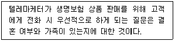
- 지리적 특성
- 행동적 특성
- 인구통계학적 특성
- 심리적 특성
(정답률: 86%)
8. 고객데이터베이스 분석기법에 대한 설명으로 틀린 것은?
- 회귀분석 - 영향을 주는 변수와 영향을 받는 변수가 서로 선형관계가 있다고 가정하여 이루어지는 분석방법
- 판별분석 - 집단 간의 차이가 어떠한 변수에 의해 영향을 받는가를 분석하는 방법
- 군집분석 - 여러 대상을 몇 개의 변수를 기초로 서로 비슷한 것끼리 묶어주는 분석 방법
- RFM - 제품에 대한 특성을 중심으로 분석하는 방법
(정답률: 67%)
9. 데이터베이스 마케팅에 대한 설명으로 틀린 것은?
- 컴퓨터에 수록된 고객 데이터베이스를 바탕으로 한다.
- 고객과의 장기적인 릴레이션 구축을 위한 활동이다.
- 고객에게 보다 질 높은 서비스를 제공하고자 한다.
- 적정 상품을 대량으로 생산하여 대량으로 판매한다.
(정답률: 82%)
10. 데이터베이스 마케팅의 특징에 관한 설명으로 틀린 것은?
- 고객지향적 마케팅 전개가 가능하다.
- 축적된 정보의 전사적 활용이 불가능하다.
- 새로운 유통채널 및 서비스 수행시스템으로서의 기능이 있다.
- 평생고객가치에 근거한 기존고객의 고정 고객화 관리에 기여한다.
(정답률: 87%)
11. 텔레마케터가 잠재고객에게 판매를 성공시키기 위한 행위로 틀린 것은?
- 잠재고객의 이름, 나이, 학력, 취미, 직업, 성격 등을 상세히 알고 난 후 접촉해야 한다.
- 제품설명(demonstration)시에 상품 구입의 합리적 이유뿐만 아니라 어느 정도 극적인 장면을 연출할 필요가 있다.
- 친구, 이웃사람, 회사의 직원, 현재고객으로부터 잠재고객의 정보를 얻는다.
- 잠재고객의 반대질문이 나오지 않도록 설명을 계속해야 한다.
(정답률: 67%)
12. 제품의 가격 변화에 따른 소비자의 수요 변화나 공급추이에 관한 정도를 의미하는 것은?
- 가격대 성능비
- 가격 탄력성
- 가격 표시제
- 기회비용
(정답률: 84%)
13. 다음 중 기업의 마케팅믹스(4P)에 해당하지 않는 것은?
- 유 통
- 가 격
- 고 객
- 제 품
(정답률: 67%)
14. 소비자가 서비스 구매의 의사결정과정에서 접할 수 있는 일반적인 위험의 유형에 관한설명으로 틀린 것은?
- 재무적 위험 - 구매가 잘못되었거나 서비스가 제대로 수행되지 않았을 때 발생할 수 있는 금전적인 손실
- 물리적 위험 - 구매했던 의도와 달리 제대로 기능을 발휘하지 않을 가능성
- 사회적 위험 - 구매로 인해 소비자의 사회적인 지위가 손상 받을 가능성
- 심리적 위험 - 구매로 인해 소비자의 자존심이 손상 받을 가능성
(정답률: 64%)
15. 소비재 제품의 분류 중 다음 설명에 해당하는 것은?
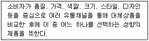
- 편의품
- 선매품
- 전문품
- 미탐색품
(정답률: 78%)
16. 마케팅믹스 중 촉진(Promotion)에 대한 설명으로 맞는 것은?
- 제품계열(product line)과 품목(item)으로 구성된다.
- 기업이 제공하는 효용에 대해 소비자가 지불하는 대가인 것이다.
- 기업의 고객과의 의사소통수단인 광고, 홍보, 판매촉진, 그리고 인적판매를 말한다.
- 소비자가 원하는 제품을 원하는 장소와 원하는 시간에 구매할 수 있도록 해주는 것이다.
(정답률: 84%)
17. 다음 설명에 해당하는 정보시스템은?
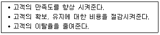
- 전사적 자원관리 시스템
- 공급사슬관리 시스템
- 의사결정 시스템
- 고객관계관리 시스템
(정답률: 85%)
18. 마케팅믹스에 대한 설명으로 틀린 것은?
- 편의품은 소비자가 구매활동에 많은 시간과 돈을 들이지 않고 자주 구매하는 제품이다.
- 제품수명주기 중 성장, 성숙기는 특히 매출액이 증가하는 시기이다.
- 침투가격은 매출이 가격에 민감하게 반응하지 않는 경우에 그 효과가 크다.
- 제품믹스란 한 기업이 가지고 있는 모든 제품의 집합을 말한다.
(정답률: 60%)
19. 소비자가 구입하고자 하는 TV를 아래와 같이 평가했을 때의 설명으로 옳은 것은?(문제 오류로 실제 시험장에서는 모두 정다 처리 되었습니다. 여기서는 1번을 누르면 정답 처리 됩니다.)
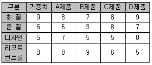
- 보완적 접근법으로 TV를 선택하면 A제품을 선택하게 된다.
- 사전편집식 접근법으로 TV를 선택하면 B제품을 선택하게 된다.
- 사전편집식 접근법으로 TV를 선택하면 C제품을 선택하게 된다.
- 보완적 접근법으로 TV를 선택하면 D제품을 선택하게 된다.
(정답률: 73%)
20. 시장세분화 전략의 핵심 포인트에 해당하는 것은?
- 글로벌시장 전략
- 판매촉진 전략
- 표적시장 선정
- 시장범위 확대
(정답률: 74%)
21. 텔레마케팅에 대한 설명으로 틀린 것은?
- 텔레마케팅은 테스트마케팅이 필요치 않다.
- 텔레마케팅은 비용 효율적이다.
- 텔레마케팅은 쌍방향 커뮤니케이션이다.
- 텔레마케팅은 효과측정이 용이하다.
(정답률: 87%)
22. 다음에 제시된 정보와 가장 관련 있는 것은?
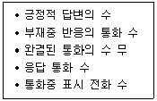
- CID(Call Identity Delivery)
- CL(Compiled List)
- CCR(Communicator Call Report)
- CAT(Computer Assisted Telemarketing)
(정답률: 60%)
23. 새로운 제품전략 수립 시 기업의 성장기회를 확인하기 위한 다음 모형의 ( ) 안에 들어갈 가장 적합한 것은?
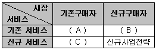
- A : 점유구축전략, B : 시장확장전략, C : 품목확장전략
- A : 시장확장전략, B : 점유구축전략, C : 품목확장전략
- A : 품목확장전략, B : 시장확장전략, C : 점유구축전략
- A : 점유구축전략, B : 품목확장전략, C : 시장확장전략
(정답률: 68%)
24. 시장세분화의 변수로 틀린 것은?
- 인구통계적 변수
- 심리적 분석변수
- 구매행동변수
- 수요예측변수
(정답률: 52%)
25. 아웃바운드 텔레마케팅의 특성과 거리가 먼 것은?
- 고객에게 전화를 거는 능동적·공격적 마케팅이다.
- 고객반응률을 매우 중요시한다.
- 데이터베이스마케팅 기법을 활용하면 더욱 효과적이다.
- 기존고객관리에는 매우 효율적인 반면, 신규고객관리는 비효율적이다.
(정답률: 85%)
2과목: 시장조사
26. 표본조사와 전수조사에 관한 설명으로 가장 적합한 것은?
- 모집단의 수가 너무 많을 경우 표본조사를 한다.
- 전수조사가 표본조사보다 항상 오류가 없으나 비용이 많이 들어서 표본조사를 한다.
- 마케팅 부서는 항상 전수조사를 선호한다.
- 표본조사는 조사결과에 심각한 오류가 많아 기피된다.
(정답률: 70%)
27. 개방형 설문지의 특성과 가장 거리가 먼 것은?
- 명확한 응답을 구할 수 있다.
- 소규모 조사에 많이 활용된다.
- 오류 발생 소지가 적다.
- 예비조사나 탐색적인 조사 등을 위해 흔히 쓰인다.
(정답률: 44%)
28. “본 제품을 처음으로 사용하게 된 계기는 무엇입니까?”라는 식으로 응답자가 질문에 대해 자신의 의견을 제약 없이 표현할 수 있도록 해주는 질문형태는?
- 자유응답형 질문
- 다지선다형 질문
- 양자택일형 질문
- 집단토의형 질문
(정답률: 83%)
29. 1차 자료수집 계획이라고 할 수 없는 것은?
- 관찰조사
- 전화조사
- 실험조사
- 역할조사
(정답률: 54%)
30. 조사와 관련된 주제나 변수와 관련된 이전의 연구, 보고서, 관련서적, 각종 2차 자료를 이용하여 사전지식을 얻고 조사에 대한 간접경험을 하는 조사방법은?
- 횡단조사
- 문헌조사
- 전문가조사
- 사례연구
(정답률: 56%)
31. 다음 사례에서 A유통업자의 표본추출방법은?
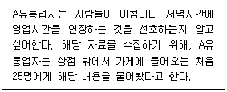
- 비확률표본추출
- 확률표본추출
- 통계적추론
- 기준표본추출
(정답률: 60%)
32. 시장조사의 주체가 표본추출방법을 결정할 때 반드시 같이 결정해야 할 사항으로 조사비용 및 조사의 정확도와 가장 밀접한 관련성을 가지는 것은?
- 모집단의 대상
- 표본의 크기
- 면접원의 수
- 신뢰구간의 크기
(정답률: 61%)
33. 마케팅 리서치에 대한 설명으로 가장 거리가 먼 것은?
- 마케팅 활동과 관련성이 있어야 한다.
- 미래의 정보를 수집해야 한다.
- 신뢰할 수 있어야 한다.
- 정확하고 타당성이 있어야 한다.
(정답률: 78%)
34. 일반적인 자료수집방법의 선택기준이 아닌 것은?
- 필요한 자료의 객관성
- 수집된 자료의 정확성
- 필요한 자료의 공개와 독창성
- 자료수집과정의 신속성
(정답률: 73%)
35. 다음 ( )안에 들어갈 알맞은 용어는?
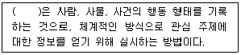
- 관찰
- 분석
- 기능
- 위장
(정답률: 74%)
36. 전화조사의 특징이 아닌 것은?
- 지역제한을 받지 않는다.
- 경제적이고 효율적이다.
- 비교적 시간적 제한이 있다.
- 융통적이고 제한적이다.
(정답률: 62%)
37. 효과적인 마케팅 의사결정을 하기 위해 정보추출에 사용되는 기술조사 방법이 아닌 것은?
- 문헌조사
- 횡단조사
- 패널조사
- 시계열조사
(정답률: 47%)
38. 2차 자료에 관한 설명으로 틀린 것은?
- 단기간에 자료를 쉽게 획득할 수 있다.
- 1차 자료에 비해 상대적으로 비용이 적게 든다.
- 당면한 조사문제를 해결하기 위하여 직접 수집된 자료이다.
- 1차 자료를 수집하기 전에 주요 예비조사로 사용된다.
(정답률: 58%)
39. 다음 ( )안에 들어갈 알맞은 용어는?
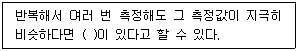
- 타당성
- 신뢰성
- 민감성
- 선별성
(정답률: 76%)
40. CLT(Central Location Test)조사에 대한 설명으로 맞는 것은?
- 일정한 장소에 소비자들을 모은 후 새로운 마케팅 믹스에 대한 개별 소비자의 반응을 조사하는 방법
- 소비자들에게 실제로 가정에서 상품을 사용토록 한 후 이에 대한 반응을 조사하는 방법
- 기존제품이나 신제품에 대한 소비자들의 의식을 심층조사하는 방법
- 상품 기획 아이디어에 대한 검토 및 스크리닝 방법
(정답률: 73%)
41. 집단면접법에 관한 설명으로 틀린 것은?
- 집단의 규모는 8~12명으로 구성한다.
- 집단성격은 다양한 의견을 위해 이질적으로 구성한다.
- 환경은 편안하고 비공식적 분위기로 자발적인 참여를 유도한다.
- 집단 구성원 간의 자유로운 참여를 유도하는 진행자의 역할이 중요하다.
(정답률: 61%)
42. 우편조사에 관한 설명으로 틀린 것은?
- 응답요령이 상세하게 설명되어 있는 구조화된 설문지를 우편으로 조사대상자에게 발송하고 응답 후 반송하도록 하는 조사방법이다.
- 지리적으로 거리가 멀고 광범위하게 분산되어 있는 경우에 경제적으로 조사를 할 수 있으며 상대적으로도 많은 양의 질문을 할 수 있다.
- 조사자들이 시간을 두고 설문에 자세히 응답할 수 있기 때문에 가장 큰 장점은 높은 회수율이다.
- 우편 조사방법은 면접방식으로 응답하기 곤란한 사적인 내용에 대한 조사에 용이하다.
(정답률: 75%)
43. 인과관계를 설정하는 기준으로 적절하지 않은 것은?
- 변인의 중요도
- 연구범위의 제한
- 결정적 원인
- 인과관계의 순환
(정답률: 14%)
44. 외적타당도를 저해하는 요인이 아닌 것은?
- 반작용효과(reactive effects)
- 실험대상자 선정에서 오는 편향
- 독립변수간의 상호작용
- 피실험자의 변화에 따른 영향
(정답률: 19%)
45. 다음 중 탐색적 조사방법(exploratory research)에 해당하지 않는 것은?
- 유관분야의 관련문헌 조사
- 변수간의 상관관계에 대한 조사
- 통찰력을 얻을 수 있는 소수의 사례조사
- 연구문제에 정통한 경험자를 대상으로 한 조사
(정답률: 60%)
46. 전화조사에서 발생될 수 있는 무응답 오류에 해당하는 것은?
- 데이터 분석에서 나타나는 오류
- 부적절한 질문으로 인하여 나타나는 오류
- 조사와 관련 없는 응답자를 선정하여 나타나는 오류
- 응답자의 거절이나 비접촉으로 나타나는 오류
(정답률: 77%)
47. 측정의 신뢰도와 타당도에 관한 설명으로 틀린 것은?
- 타당도는 측정하고자 하는 개념이나 속성을 정확히 측정하였는가의 정도를 의미한다.
- 신뢰도는 측정치와 실제치가 얼마나 일관성이 있는지를 나타내는 정도이다.
- 타당성이 있는 측정은 항상 신뢰성이 있으며, 신뢰성이 없는 측정은 타당도가 보장되지 않는다.
- 타당도 측정 시 내적 타당도 보다 외적 타당도를 중심으로 해야 한다.
(정답률: 66%)
48. 설문지 질문의 순서를 결정하기 위한 일반적인 지침이 아닌 것은?
- 첫 번째 질문은 응답자의 부담감을 덜어줄 수 있도록 재미있으며 관심을 가질 수 있는 내용이어야 한다.
- 조사자는 가능한 한 쉽게 대답할 수 있는 질문들은 전반부에 배치하고, 응답하기 어려운 질문들은 후반부에 배치하여야 한다.
- 갑작스러운 논리의 전환이 이루어지지 않도록 질문의 순서를 정하여야 한다.
- 인구통계학적인 질문(소득, 학력, 직업, 성별, 연령)은 설문지의 맨 앞부분에 배치하여야 한다.
(정답률: 60%)
49. 조사보고서 작성시 유의해야 할 사항과 거리가 먼 것은?
- 조사시행과 분석과정에서 시장 환경변화를 반영하기 위해 처음에 설정한 조사문제와 조사목적을 벗어나도 된다.
- 관리자가 쉽게 이해하고 활용할 수 있도록 보고서는 작성되어야 한다.
- 시장조사에 따른 분석결과에 대한 진술과 설명은 객관적인 증거를 바탕으로 이루어져야 한다.
- 지나치게 확정적으로 전략대안을 제시하는 것은 회피하여야 한다.
(정답률: 85%)
50. 시장조사를 위한 면접조사의 주요 단점으로 틀린 것은?
- 면접을 적용할 수 있는 지리적인 한계가 있다.
- 언어적인 커뮤니케이션만을 통해 자료를 수집한다.
- 면접자를 훈련하는 데 많은 비용이 소요된다.
- 응답자들이 자신의 익명성 보장에 대해 염려할 소지가 있다.
(정답률: 71%)
3과목: 텔레마케팅관리
51. 다음 중 콜센터 관리자에게 요구되는 자질이 아닌 것은?
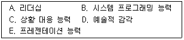
- A, C
- B, D
- C, E
- D, E
(정답률: 60%)
52. 텔레마케팅 운영방법 중 일반적으로 자체운영방식이 대행운영방식보다 더 비효율적인 경우는?
- 고객 정보, DB의 외부유출방지가 요구될 경우
- 텔레마케팅 교육 및 경험이 축적되어 있을 경우
- 짧은 기간 집중적으로 고객과 통화해야 하는 경우
- 새로운 고객이나 시장에 기술적인 상품을 아웃바운딩해야 하는 경우
(정답률: 34%)
53. 상담원들의 이직관리에 대한 사항으로 틀린 것은?
- 상담원에게 콜센터의 비전을 제시하고 동기부여 한다.
- 상담원을 제외한 관리자와 스텝의 말만 충분히 고려한다.
- 즐겁게 일하는 콜센터 분위기를 조성한다.
- 이직의 원인을 지속적으로 모니터링하고 개선한다.
(정답률: 70%)
54. 조직의 성과관리를 위한 개인평가방법을 상사평가방식과 다면평가방식으로 구분할 때 상사평가방식의 특징이 아닌 것은?
- 간편한 작업 난이도
- 상사의 책임감 결여
- 평가결과의 공정성 미흡
- 중심화, 관대화 오류발생 가능성
(정답률: 37%)
55. 콜센터의 경쟁력 제고를 위한 방안으로 틀린 것은?
- 상담원의 교육훈련 프로그램 운영
- 급여체계와 복리후생 개선
- 콜센터 관리 인력의 최대화
- 콜센터 리더 육성 프로그램 운영
(정답률: 57%)
56. 리더십 역량 측정에 관한 용어의 설명으로 틀린 것은?
- 명확성 - 의사소통시 명확한 자신의 의사를 전달하여 직원이 혼란스럽거나 추측하지 않도록 하는 역할
- 신뢰성 - 리더의 권력을 인정함으로 그들이 리더와 자신의 일에 대해 신뢰하게 하는 역할
- 균형 잡힌 시각 - 전체 업무에 대한 왜곡되지 않은 시각을 견지하는 역할
- 참여 - 직원들이 그들의 일을 스스로 판단해서 할 수 있도록 허락하는 역할
(정답률: 29%)
57. 리더십에 대한 설명으로 바람직하지 않은 것은?
- 그린리프는 새로운 리더십으로 서번트 리더십을 제시하였다.
- 두드러진 리더십의 특징은 조직구성원들의 행동을 통해 확인할 수 있다.
- 리더는 자신의 약점을 보완하기 위해 70%의 시간과 노력을 투자해야 한다.
- 리더십은 리더의 특성, 상황적 특성, 직원의 특성에 의한 함수관계에 따라 발휘되어야 한다.
(정답률: 45%)
58. OJT(On the Job Training) 교육단계로 맞는 것은?
- 학습준비 → 업무설명 → 업무실행 → 결과확인
- 업무실행 → 학습준비 → 업무설명 → 결과확인
- 업무실행 → 결과확인 → 업무설명 → 학습준비
- 업무실행 → 업무설명 → 학습준비 → 결과확인
(정답률: 60%)
59. 텔레마케터의 상담품질 관리를 위해 모니터링 평가와 코칭 업무를 담당하는 사람을 표현하는 용어는?
- ATT(Average talk time)
- QC(Quality Control)
- QAA(Quality Assurance Analyst)
- CMS(Call Management System)
(정답률: 59%)
60. 콜 예측량 모델링을 위한 콜센터 지표가 아닌 것은?
- 평균통화시간
- 평균마무리처리시간
- 고객콜 대기시간
- 신규고객 획득비용
(정답률: 66%)
61. 리더십의 필수 요소가 아닌 것은?
- 장기적인 비전 제시
- 위험을 회피하기보다 감수
- 창조적인 도전 중시
- 사람보다는 일 중심의 관리
(정답률: 69%)
62. 아웃바운드 텔레마케팅의 성과지표로 적합하지 않은 것은?
- 총 통화시간
- 평균 판매가치
- 평균포기 콜
- 판매건당 비용
(정답률: 52%)
63. 텔레마케팅에 대한 설명으로 맞는 것은?
- 텔레마케팅은 방문 상담을 통한 수익 창출 형태의 마케팅 기법이다.
- 텔레마케팅을 위해서는 필수적으로 전용 교환기 및 CTI 장비를 갖춘 콜센터가 반드시 필요하다.
- 웹 사이트 상으로 상품의 판매나 고객 지원이 가능한 경우는 별도로 전화 상담원을 둘 필요가 없다.
- 홈쇼핑 광고를 통해 소비자에게 주문 전화를 유도하여 상품을 판매하는 것도 텔레마케팅의 기법 중에 하나이다.
(정답률: 49%)
64. 인바운드 모니터링 평가기준으로 부적합한 것은?
- 상품지식 숙지도
- 컴플레인 처리능력
- 끝맺음
- 의사결정자 파악능력
(정답률: 40%)
65. 모니터링의 핵심성공요소가 아닌 것은?
- 모니터링에 대한 공감대 형성
- 합리적 평가지표 및 목표설정
- 주관적 평가 실시
- 코칭 및 사후점검
(정답률: 64%)
66. 성과측정을 위한 인터뷰시 발생하는 오류 중 한 가지 측면에서 뒤떨어질 경우 나머지 모두를 나쁘게 평가하는 것을 무슨 효과라 하는가?
- 각인효과(horn effect)
- 후광효과(halo effect)
- 대조효과(contrast effect)
- 상동효과(stereotype effect)
(정답률: 42%)
67. 사전에 준비를 철저히 하여 고객과의 대화 방식을 맨투맨으로 실제적으로 연습하는 것으로, 상담원이 무의식적으로 사용하는 나쁜 말이나 주의점을 찾아내 상황 대응능력을 제고 할 수 있고, 상담 실무 적응력을 높이는데 사용되는 훈련 방법은?
- 질의응답(Q&A)
- 데이터시트(Data Sheet)
- 스크립트(Script)
- 역할연기(Role Play)
(정답률: 66%)
68. 텔레마케팅에서 지향하는 마케팅 전략으로 맞는 것은?
- 판매 중심적 마케팅 전략
- 고객 중심적 마케팅 전략
- 제품 중심적 마케팅 전략
- 기업 중심적 마케팅 전략
(정답률: 80%)
69. 텔레마케팅 특성과 가장 거리가 먼 것은?
- 쌍방향 커뮤니케이션이 이루어진다.
- 전화 및 통신장치 등을 활용하여 비대면으로 접촉한다.
- 언어적인 메시지와 비언어적인 메시지를 동시에 사용한다.
- 피드백은 즉각적이고 직접적이기 보다는 비대면이기 때문에 간접적으로 이루어진다.
(정답률: 59%)
70. 효과적으로 모니터링을 실행하는 방법으로 틀린 것은?
- 모니터링의 평가기준을 텔레마케터가 충분히 숙지할 수 있도록 한다.
- 모니터링의 평가기준은 텔레마케터의 수준이 우선 고려되어야 한다.
- 모니터링 평가 결과에 따른 개별 코칭이 필요하다.
- 모니터링 평가기준은 정기적으로 수정·보완해야 한다.
(정답률: 64%)
71. 콜센터 성과측정 중 고객 접근가능성 여부를 측정하는 지표로 가장 거리가 먼 것은?
- Service Level
- Response Rate
- Average Speed of Answer
- First-call Resolution
(정답률: 41%)
72. 상담원 인사관리 및 교육 등에 대해 관련 직무분석을 활용한다. 다음 중 직무분석에 대한 설명으로 틀린 것은?
- 해당 직무의 모든 중요한 정보만을 수집하는 것이 직무분석이다.
- 해당 업무 프로세스 개선의 기초가 된다.
- 상담원의 훈련 및 교육 개발의 기준이 된다.
- 조직이 요구하는 일의 내용, 요건 등을 정리·분석한 것이다.
(정답률: 66%)
73. 텔레마케팅을 수행하는 조직의 특성으로 틀린 것은?
- 다양한 기술들의 통합을 위한 관리가 효과적으로 이루어지고 있다.
- 가치를 극대화하기 위한 고객의 행동분석이 효과적으로 이루어지고 있다.
- 텔레마케터의 성과측정이 효과적으로 이루어지고 있다.
- 고객의 충성도 제고를 위해 조직의 비용절감을 가장 중요하게 여긴다.
(정답률: 71%)
74. 콜센터 문화에 영향을 미치는 기업적 요인에 해당되지 않는 것은?
- 근로 급여조건
- 기업의 지명도
- 상담원에 대한 직업의 매력도
- 상담원과 슈퍼바이저의 인간적 친밀함
(정답률: 24%)
75. 임금체계에 따른 분류방법으로 적절하지 않은 것은?
- 연공급
- 직무급
- 직능급
- 성과급
(정답률: 55%)
4과목: 고객응대
76. 까다로운 클레임 처리기법의 설명으로 틀린 것은?
- 고객에게 정중하게 사과하기
- 고객과 함께 협력하여 문제 해결하기
- 회사의 입장을 정당화 할 수 있는 논리를 제시하기
- 고객에게 도움이 될 수 있는 최선의 대안 찾기
(정답률: 73%)
77. 불만고객에게는 감정을 발산할 수 있게 해 주는 것이 필요하다. 다음 중 불만고객이 감정을 발산하는 경우 지양해야 할 행동이나 언어는?
- 고객이 충분히 감정을 발산할 시간을 준다.
- 가끔씩“네, 네, 그렇죠.”라고 맞장구 표현을 한다.
- 고객 입장에서 먼저 생각한다.
- “아니, 이해를 못하시는 것 같아요”라고 표현한다.
(정답률: 75%)
78. 컴플레인 고객응대의 기본 원칙에서 위배되는 사항은?
- 고객의 입장에서 고객을 위한 방향으로 상담한다.
- 고객의 감정을 극대화시켜 전화를 먼저 끊게 한다.
- 고객의 입장에 대해 공감을 표시하여 불만스러운 마음을 풀어준다.
- 고객의 반말이나 높은 언성, 행동 등에 화를 내거나 개인적인 말을 하지 않는다.
(정답률: 74%)
79. 고객응대시 필요한 지식과 거리가 먼 것은?
- 고객의 구매심리 및 고객시장에 관한 지식
- 제품 및 서비스에 관한 지식
- 통신시스템에 대한 전문적 지식
- 생산, 유통 과정과 품질에 관한 지식
(정답률: 67%)
80. 커뮤니케이션의 특징이 아닌 것은?
- 커뮤니케이션은 서로의 행동에 영향을 미친다.
- 커뮤니케이션은 오류와 장애가 발생할 수 있다.
- 커뮤니케이션의 형식은 고정되어 있다.
- 커뮤니케이션은 순기능과 역기능이 존재한다.
(정답률: 66%)
81. 텔레마케팅 고객응대의 특징으로 틀린 것은?
- 언어적 메시지만을 사용한다.
- 쌍방간의 커뮤니케이션이 이루어진다.
- 상호 피드백이 신속히 이루어진다.
- 고객 반응별 상황 대응능력이 중요하다.
(정답률: 69%)
82. 기업과 고객의 만남과 상호작용을 통한 고객변화의 단계에 관한 설명으로 틀린 것은?
- 예상고객 단계 - 개인적 접촉, 우편, 텔레마케팅 등을 통해 첫 거래를 성사시킬 수 있는 상태이다.
- 고객 단계 - 금전적 인센티브 등에 의해 재구매 동기를 갖게 된다.
- 단골 단계 - 제품 또는 서비스에 불만이 생겨도 동일한 점포나 동일한 브랜드를 이용하는 성향을 보인다.
- 기업의 옹호자 단계 - 좋은 구전을 전파함으로써 간접적인 광고역할을 하며 고객을 끌어오기도 한다.
(정답률: 41%)
83. 성공적인 CRM을 위한 전략으로 틀린 것은?
- 고객 점유율보다는 시장 점유율에 비중을 둔다.
- 고객획득보다는 고객유지에 중점을 둔다.
- 상품판매보다는 고객관계에 중점을 둔다.
- 단기적인 안목보다는 장기적인 관점에서 접근해야 한다.
(정답률: 70%)
84. 고객생애가치에 영향을 미치는 요소 중 고객접촉 채널별 이용의 편의성, 고객 불만 처리정도 등을 수시로 평가할 수 있는 것은?
- 고객반응률
- 고객신뢰도
- 고객기여도
- 고객성장성
(정답률: 25%)
85. 고객의 행동유형에 따른 효과적인 응대요령으로 가장 적합한 것은?
- 추진형 - 요점만을 제시하고 결정은 본인 스스로 내리게 한다.
- 온화형 - 자료를 제시하고 애매한 일반화는 피한다.
- 표현형 - 반박을 하지 않도록 주의하고, 편안하고 친근감 있게 대한다.
- 분석형 - 관심을 갖는 시간이 짧기 때문에 흥미를 잃지 않도록 유의해야 한다.
(정답률: 46%)
86. 고객 성격의 특성에 따른 응대요령으로 틀린 것은?
- 급한 성격은 신속하게 행동하고 설명도 핵심만 강조한다.
- 결단성이 없는 성격은 기회를 잡아 빨리 요점만 설명한다.
- 내성적인 성격은 조용하게 응대하고 상대의 의견을 충분히 들어준다.
- 흥분을 잘하는 성격은 부드러운 분위기를 유지하며 강압하지 않는다.
(정답률: 66%)
87. 고객에게 제품 또는 서비스를 설명하는 방법으로 가장 거리가 먼 것은?
- 고객이 가장 관심을 갖고 있는 부분을 파악하고 집중하는 것이 필요하다.
- 자신의 업무적 지식을 과시하는 듯한 대화를 통하여 관계를 불편하게 해서는 안 된다.
- 고객의 반응과 관계없이 한마디, 한마디를 정확하게 포인트만을 전달한다.
- 요점을 간결하게 전달하여 시간적 낭비를 줄인다.
(정답률: 74%)
88. 고객의 소리(VOC)는 기업의 경영활동에 중요한 원천으로 활용할 수 있다. 고객의 소리(VOC)에 대한 설명으로 거리가 먼 것은?
- 다양한 고객의 소리를 수집하기 위해 SNS(Social Network Service)를 활용하여야 한다.
- VOC를 소홀히 하거나 잘못 응대할 경우 기업의 부정적 이미지를 강화할 수 있다.
- 자사에 대한 VOC 발생은 전적으로 상담원의 중대한 결함으로 즉각적인 조치를 취해야 한다.
- 수집된 VOC를 분석하여 이를 개선활동과 연계하는 등 경영활동에 반영하여야 한다.
(정답률: 69%)
89. 고객이 기업과 만나는 모든 장면에서‘결정적인 순간’을 의미하는 용어는?
- MOT
- RFM
- LTV
- FAB
(정답률: 67%)
90. 다음 ( )안에 들어갈 알맞은 것은?
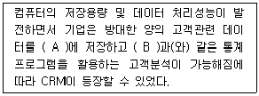
- A - 데이터웨어하우스, B - 데이터베이스
- A - 데이터마이닝, B - 데이터웨어하우스
- A - 데이터베이스, B - 데이터마이닝
- A - 데이터웨어하우스, B - 데이터마이닝
(정답률: 37%)
91. 다음 대화를 이루는 요소 중 텔레마케팅에서 상대적으로 중요도가 가장 낮은 것은?
- Visual(시각적인 요소)
- Verbal(사용하는 단어와 문장)
- Voice(목소리 음색과 톤)
- Value-Added(감성 화법)
(정답률: 73%)
92. 다음의 고객표현에 대한 상담원의 응대 화법으로 가장 적절한 것은?
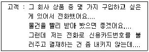
- “카드 결제가 가장 빠르지만 내키지 않으시면 온라인으로 송금을 해주시거나 직접 방문하셔서 구입하시는 방법도 있습니다.”
- “다른 방법은 전화주문 만큼 빠르지 않습니다. 카드 결제를 하셔야 빨리 상품을 받으실 수 있으니 카드 결제를 하시기 바랍니다.”
- “요즘은 거의 모든 고객이 전화로 신용카드 번호를 불러주십니다. 문제없습니다.”
- “그러면 좀 더 생각해 보시고 다시 전화 주시기 바랍니다.”
(정답률: 69%)
93. 고객관계관리(CRM) 구축을 통한 기업의 핵심과제로 가장 거리가 먼 것은?
- 특정사업에 적합한 소비자 가치를 규명한다.
- 각 고객집단이 가진 가치의 상대적 중요성을 인지한다.
- 고객에 대한 이해를 바탕으로 시스템을 구축한다.
- 기업이 원하는 방법으로 고객가치를 충족한다.
(정답률: 64%)
94. 의심이 많은 고객의 응대요령으로 가장 올바른 것은?
- 한 가지 상품을 제시하고, 고객을 대신하여 결정을 내린다.
- 근거가 되는 구체적 자료를 제시한다.
- 맞장구와 함께 천천히 용건에 접근한다.
- 묻는 말에 대답하고 의사를 존중한다.
(정답률: 70%)
95. 새로운 패러다임의 요구에 의해 고객관계관리(CRM)의 중요성이 부각되었다. 고객관계관리가 기업운영에 있어서 중요하게 등장한 이유가 아닌 것은?
- 시장의 규제완화로 인하여 새로운 시장으로의 진입 기회가 늘어남에 따라 동일 업종에서의 경쟁이 치열하게 되었다.
- 컴퓨터 및 IT기술의 급격한 발전으로 인해 기업의 외적인 환경이 형성되었다.
- 고객의 기대와 요구가 다양해지고 끊임없이 더 나은 서비스나 차별화된 대우를 요구하게 되었다.
- 광고를 비롯한 마케팅커뮤니케이션 방식에서 획일적인 매스마케팅 방식의 요구가 커졌다.
(정답률: 67%)
96. 고객 불평불만을 처리함으로써 얻을 수 있는 효과로 틀린 것은?
- 고객으로부터 신뢰를 얻음으로써 구전효과를 얻을 수 있다.
- 마케팅 및 경영활동에 유용한 정보로 활용할 수 있다.
- 법적처리 등 사후 비용이 더욱 늘어나 장기적으로 회사의 손실을 초래할 수 있다.
- 고객유지율 증가로 장기적, 지속적인 이윤을 높일 수 있다.
(정답률: 64%)
97. 소비자 상담의 촉진관계를 위해 필요한 상담자의 바람직한 태도 및 행동 특징이 아닌 것은?
- 공감적 이해
- 일관적 성실
- 수용적 존중
- 일반적 능력
(정답률: 53%)
98. 고객유형 중“안정형”인 고객의 행동경향이 아닌 것은?
- 대체적으로 인내심이 강하다.
- 자신의 의견을 말하기 보다는 듣고자 한다.
- 상품 구매 결정이 신속히 이루어진다.
- 상담원의 질문에 대해 답변이 바로 나오지 않는다.
(정답률: 70%)
99. 외부 물리적 환경에 의한 경청의 방해 요인이 아닌 것은?
- 소음공해
- 전화벨
- 노 크
- 편 견
(정답률: 73%)
100. 효과적인 커뮤니케이션을 위해 메시지 전달자에게 요구되는 사항으로 틀린 것은?
- 전달하는 내용에 대한 명확한 목표설정이 있어야 한다.
- 적절한 커뮤니케이션 수단의 활용으로 효과적인 메시지 전달이 될 수 있다.
- 자신이 원하는 메시지를 전하고 기다리는 소극적인 커뮤니케이션 자세가 필요하다.
- 상호 간의 공감적인 관계형성 없이는 실질적인 의미의 커뮤니케이션은 불가능하다.
(정답률: 73%)